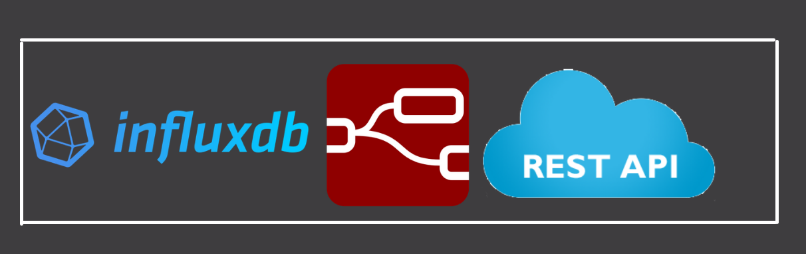
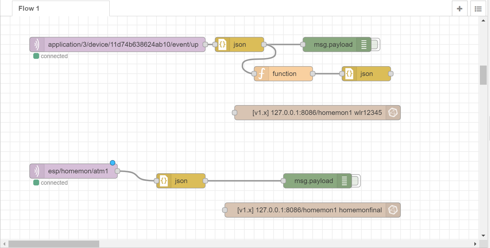

InfluxDB, Node-RED, REST API and Cloud Computing
Posted on April 27, 2021

Hello my fellow energy enthusiasts!! It gives me immense pleasure to share my knowledge with you. For any website to run efficiently and for a longer period of time it requires a very strong backend along with the front end. Our website uses InfluxDB , REST API and Node-Red as back end.
InfluxDB
Let’s start with Influx DB. Data from the sensors is captured and stored into influx db. InfluxDB is an open source time series database and is widely used in the IOT applications.
We store energy parameters like Voltage, Current, Power Consumed,Energy Consumed and Power Generated. We also store node readings like SNR and RSSI.
All the energy parameters and the node parameters are stored into a database called homemon1. Inside this database all the readings are stored into a measurement or table.
The Data definition language and the data manipulation language used is called InfluxQL. So let’s see some basic InfluxQL commands that we have used in the project.
- Creating a database
- SELECT command
- DISTINCT COMMAND
Create database databasename;
Select * from measurementname;
SELECT DISTINCT(Fieldname) FROM meaurementname;
Installation Guide : InfluxDB OSS
InfluxDB OSS installation locally or on CloudNode-RED
Node-RED is a programming tool for wiring together hardware devices, APIs and online service. Node-RED has various predefined nodes with various functionalities.
Once the data is transmitted by MQTT or LoRaWAN protocol, It reaches the broker where Node-RED subscribes to that broker.
It uses MQTTin node to catch the data, function node to extract information from it and JSON node to convert it into JSON format. Node-Red also has nodes that are used to inject data and query data from Influxdb.
One can install these nodes by clicking on the three lines button on the top right hand side of Node-RED application and then clicking on the manage pallet option. On clicking the manage pallet option go to the install section and search for node-red-contrib-influxdb module.
Node that is used to inject data into the InfluxDB is called influxdbout and the node used to query the InfluxDB is called InfluxDBin.
Given below is the Node-RED flow for for the above mentioned nodes.
Installation Guide : Node-RED
Node-RED installation locally or on CloudREST API
To fetch this data from InfluxDB into our website we use rest api which is constructed using Node-RED. This requires http network nodes. Here we use http in node to create an http endpoint for creating web services and http response that send response back to requests received from an http input node.
Given below is the Node-RED flow for creating a REST API.

Cloud Computing
The server used by us is a 2vCPU 4GB Digital Ocean Droplet for our Web application.
We are using the JAM stack for our Web application dashboard and the LAMP stack for the user authentication, Solar Nexus calculator and Get component application.
Node-RED application https://nodered.solarsurveildbit.in/, Grafana application https://grafana.solarsurveildbit.in/ are hosted on the same server.
We are using Nginx Proxy Manager to enable reverse proxy to the above applications.
We are using another 2vCPU 4GB GCP instance to host our ChirpStack LoRaWAN network server and MQTT Broker.